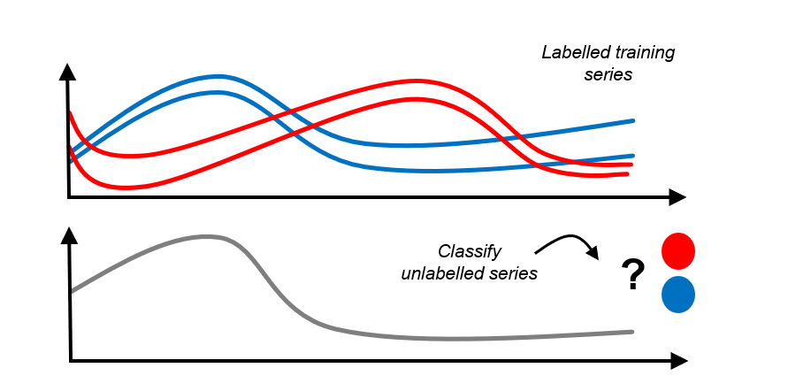

Time Series Classification, Regression, Clustering & More#
Overview of this notebook#
Introduction to time series classification, regression, clustering
sktimedata format fo “time series panels” = collections of time seriesBasic vignettes for TSC, TSR, TSCl
Advanced vignettes - pipelines, ensembles, tuning
Deal with collections of time series = “panel data”
Classification = try to assign one category per time series, after training on time series/category examples
Example: Daily energy consumption profile over time - Predict season, e.g., winter/summer, or type of consumer
Regression = try to assign one category per time series, after training on time series/category examples
Example: Temperature/pressure/time profile of chemical reactor - Predict total purity (fraction of 1)
Clustering = put different time series in a small number of similarity buckets
Example: Service Level Agreement (SLA) Breaches - Group the collected Panel data to identify common reasons for SLA failures
Time Series Classification:

{kind=link}
[1]:
import numpy as np
import pandas as pd
# Increase display width
pd.set_option("display.width", 1000)
2.1 Panel data - sktime data formats#
Panel is an abstract data type where the values are observed for:
instance, e.g., patientvariable, e.g., blood pressure, body temperature of the patienttime/index, e.g., January 12, 2023 (usually but not necessarily a time index!)
One value X is: “patient ‘A’ had blood pressure ‘X’ on January 12, 2023”
Time series classification, regression, clustering: slices Panel data by instance
Preferred format 1: pd.DataFrame with 2-level MultiIndex, (instance, time) and columns: variables
Preferred format 2: 3D np.ndarray with index (instance, variable, time)
sktimesupports and recognizes multiple data formats for convenience and internal use, e.g.,dask,xarrayabstract data type = “scitype”; in-memory specification = “mtype”
More information in tutorial on in-memory data representations and data loading
2.1.1 Preferred format 1 - pd-multiindex specification#
pd-multiindex = pd.DataFrame with 2-level MultiIndex, (instance, time) and columns: variables
[2]:
from sktime.datasets import load_italy_power_demand
# load an example time series panel in pd-multiindex mtype
X, _ = load_italy_power_demand(return_type="pd-multiindex")
# renaming columns for illustrative purposes
X.columns = ["total_power_demand"]
X.index.names = ["day_ID", "hour_of_day"]
The Italy power demand dataset has:
1096 individual time series instances = single days of total power demand (mean subtracted)
one single variable per time series instances,
total_power_demandtotal power demand on that day, in that hourly period
Since there’s only one column, it is a univariate dataset
individual time series are observed at 24 time (period) points (the same number for all instances)
In the dataset, days are jumbled and of different scope (independent sampling). * considered independent - because hour_of_day in one sample doesn’t affect hour_of_day in another * for task, e.g., “identify season or weekday/weekend from pattern”
[3]:
X
[3]:
| total_power_demand | ||
|---|---|---|
| day_ID | hour_of_day | |
| 0 | 0 | -0.710518 |
| 1 | -1.183320 | |
| 2 | -1.372442 | |
| 3 | -1.593083 | |
| 4 | -1.467002 | |
| ... | ... | ... |
| 1095 | 19 | 0.180490 |
| 20 | -0.094058 | |
| 21 | 0.729587 | |
| 22 | 0.210995 | |
| 23 | -0.002542 |
26304 rows × 1 columns
[4]:
from sktime.datasets import load_basic_motions
# load an example time series panel in pd-multiindex mtype
X, _ = load_basic_motions(return_type="pd-multiindex")
# renaming columns for illustrative purposes
X.columns = ["accel_1", "accel_2", "accel_3", "gyro_1", "gyro_2", "gyro_3"]
X.index.names = ["trial_no", "timepoint"]
The basic motions dataset has:
80 individual time series instances = trials = person engaging in an activity like running, badminton, etc.
six variables per time series instance,
dim_0todim_5(renamed according to the values they represent)3 accelerometer and 3 gyrometer measurements
hence a multivariate dataset
individual time series are observed at 100 time points (the same number for all instances)
[5]:
# The outermost index represents the instance number
# whereas the inner index represents the index of the particular index
# within that instance.
X
[5]:
| accel_1 | accel_2 | accel_3 | gyro_1 | gyro_2 | gyro_3 | ||
|---|---|---|---|---|---|---|---|
| trial_no | timepoint | ||||||
| 0 | 0 | 0.079106 | 0.394032 | 0.551444 | 0.351565 | 0.023970 | 0.633883 |
| 1 | 0.079106 | 0.394032 | 0.551444 | 0.351565 | 0.023970 | 0.633883 | |
| 2 | -0.903497 | -3.666397 | -0.282844 | -0.095881 | -0.319605 | 0.972131 | |
| 3 | 1.116125 | -0.656101 | 0.333118 | 1.624657 | -0.569962 | 1.209171 | |
| 4 | 1.638200 | 1.405135 | 0.393875 | 1.187864 | -0.271664 | 1.739182 | |
| ... | ... | ... | ... | ... | ... | ... | ... |
| 79 | 95 | 28.459024 | -16.633770 | 3.631869 | 8.978229 | -3.611533 | -1.491489 |
| 96 | 10.260094 | 0.102775 | 1.269261 | -1.645964 | -3.377157 | 1.283746 | |
| 97 | 4.316471 | -3.574319 | 2.063831 | -1.717875 | -1.843054 | 0.484734 | |
| 98 | 0.704446 | -4.920444 | 2.851857 | -2.982977 | -0.809665 | -0.721774 | |
| 99 | -2.074749 | -6.892377 | 4.848379 | -1.350330 | -1.203844 | -1.776470 |
8000 rows × 6 columns
pandas provides a simple way to access a range of value in the multi-indexed dataframe:
[6]:
# Select:
# * the fourth variable (gyroscope 1)
# * of the first instance (trial 1 = 0 in python)
# * values at all 100 timestamps
#
X.loc[0, "gyro_1"]
[6]:
timepoint
0 0.351565
1 0.351565
2 -0.095881
3 1.624657
4 1.187864
...
95 0.039951
96 -0.029297
97 0.000000
98 0.000000
99 -0.007990
Name: gyro_1, Length: 100, dtype: float64
Or if you want to access the individual values:
[7]:
# Select:
# * the fifth time time point (5 = 4 in python, because of 0-indexing)
# * the third variable (accelerometer 3)
# * of the forty-third instance (trial 43 = 42 in python)
X.loc[(42, 4), "accel_3"]
[7]:
-1.27952
2.1.2 preferred format 2 - numpy3D specification#
numpy3D = 3D np.ndarray with index (instance, variable, time)
instance/time index is interpreted as integer
IMPORTANT: unlike pd-multiindex, this assumes:
all individual series have the same length
all individual series have the same index
[8]:
from sktime.datasets import load_italy_power_demand
# load an example time series panel in numpy mtype
X, _ = load_italy_power_demand(return_type="numpy3D")
The Italy power demand dataset has:
1096 individual time series instances = single days of total power demand (mean subtracted)
one single variable per time series instances, unnamed in numpy
individual time series are observed at 24 time (period) points (the same number for all instances)
[9]:
# (num_instances, num_variables, length)
X.shape
[9]:
(1096, 1, 24)
[10]:
from sktime.datasets import load_basic_motions
# load an example time series panel in numpy mtype
X, _ = load_basic_motions(return_type="numpy3D")
The basic motions dataset has:
80 individual time series instances = trials = person engaging in activity (running, badminton, etc)
six variables per time series instance, unnamed in numpy
individual time series are observed at 100 time points (the same number for all instances)
[11]:
X.shape
[11]:
(80, 6, 100)
2.2 Time Series Classification, Regression, Clustering - Basic Vignettes#
Above tasks are very similar to “tabular” classification, regression, clustering, as in sklearn
Main distinction: * in “tabular” classification etc, one (feature) instance row vector of features * in TSC, one (feature) instance is a full time series, possibly unequal length, distinct index set
More formally:
“tabular” classification:
training pairs \((x_1, y_1), \dots, (x_n, y_n)\)
where \(x_i\) are rows of a
pd.DataFrame(same col types)and \(y_i \in \mathcal{C}\) for a finite set \(\mathcal{C}\)
is used to train a classifier that
for a new
pd.DataFramerow \(x_*\)predicts \(y_* \in \mathcal{C}\)
time series classification:
training pairs \((x_1, y_1), \dots, (x_n, y_n)\)
where \(x_i\) are time series instances, from a certain domain
and \(y_i \in \mathcal{C}\) for a finite set \(\mathcal{C}\)
is used to train a classifier that
for a new time series instance \(x_*\)
predicts \(y_* \in \mathcal{C}\)
very similar for time series regression, clustering - exercise left to reader :-)
sktime design implications:
need representation of collections of time series (panels), see tutorial In-memory data representations and data loading for more details on representation of Panel data.
same as in “adjacent” learning tasks, e.g., panel forecasting
same as for transformation estimators
algorithms that use sequentiality, can deal with unequal length, missing values etc
algorithms usually based on distances or kernels between time series - need to cover that in framework
but we can use familiar
fit/predictandscikit-learn/scikit-baseinterface!
2.2.3 Time Series Classification - deployment vignette#
Basic deployment vignette for TSC:
load/setup training data,
Xin aPanel(more specificallynumpy3D) format,yas 1Dnp.ndarrayload/setup new data for prediction (can be done after 3 too)
specify the classifier using
sklearn-like syntaxfit classifier to training data,
fit(X, y)predict labels on new data,
predict(X_new)
[12]:
# steps 1, 2 - prepare osuleaf dataset (train and new)
from sktime.datasets import load_italy_power_demand
X_train, y_train = load_italy_power_demand(split="train", return_type="numpy3D")
X_new, _ = load_italy_power_demand(split="test", return_type="numpy3D")
[13]:
# this is in numpy3D format, but could also be pd-multiindex or other
X_train.shape
[13]:
(67, 1, 24)
[14]:
# y is a 1D np.ndarray of labels - same length as number of instances in X_train
y_train.shape
[14]:
(67,)
[15]:
# step 3 - specify the classifier
from sktime.classification.distance_based import KNeighborsTimeSeriesClassifier
# example 1 - 3-NN with simple dynamic time warping distance (requires numba)
clf = KNeighborsTimeSeriesClassifier(n_neighbors=3)
# example 2 - custom distance:
# 3-nearest neighbour classifier with Euclidean distance (on flattened time series)
# (requires scipy)
from sktime.classification.distance_based import KNeighborsTimeSeriesClassifier
from sktime.dists_kernels import FlatDist, ScipyDist
eucl_dist = FlatDist(ScipyDist())
clf = KNeighborsTimeSeriesClassifier(n_neighbors=3, distance=eucl_dist)
we could specify any sktime classifier here - the rest remains the same!
[16]:
# all classifiers is scikit-learn / scikit-base compatible!
# nested parameter interface via get_params, set_params
clf.get_params()
[16]:
{'algorithm': 'brute',
'distance': FlatDist(transformer=ScipyDist()),
'distance_mtype': None,
'distance_params': None,
'leaf_size': 30,
'n_jobs': None,
'n_neighbors': 3,
'pass_train_distances': False,
'weights': 'uniform',
'distance__transformer': ScipyDist(),
'distance__transformer__colalign': 'intersect',
'distance__transformer__metric': 'euclidean',
'distance__transformer__metric_kwargs': None,
'distance__transformer__p': 2,
'distance__transformer__var_weights': None}
[17]:
# step 4 - fit/train the classifier
clf.fit(X_train, y_train)
[17]:
KNeighborsTimeSeriesClassifier(distance=FlatDist(transformer=ScipyDist()),
n_neighbors=3)Please rerun this cell to show the HTML repr or trust the notebook.KNeighborsTimeSeriesClassifier(distance=FlatDist(transformer=ScipyDist()),
n_neighbors=3)ScipyDist()
[18]:
# the classifier is now fitted
clf.is_fitted
[18]:
True
[19]:
# and we can inspect fitted parameters if we like
clf.get_fitted_params()
[19]:
{'classes': array(['1', '2'], dtype='<U1'),
'fit_time': 3,
'knn_estimator': KNeighborsClassifier(algorithm='brute', metric='precomputed', n_neighbors=3),
'n_classes': 2,
'knn_estimator__classes': array(['1', '2'], dtype='<U1'),
'knn_estimator__effective_metric': 'precomputed',
'knn_estimator__effective_metric_params': {},
'knn_estimator__n_features_in': 67,
'knn_estimator__n_samples_fit': 67,
'knn_estimator__outputs_2d': False}
[20]:
# step 5 - predict labels on new data
y_pred = clf.predict(X_new)
[21]:
# y_pred is an 1D np.ndarray, similar to sklearn classification output
y_pred
[21]:
array(['2', '2', '2', ..., '2', '2', '2'], dtype='<U1')
[22]:
# predictions and unique counts, for illustration
unique, counts = np.unique(y_pred, return_counts=True)
unique, counts
[22]:
(array(['1', '2'], dtype='<U1'), array([510, 519], dtype=int64))
all together in one cell:
[23]:
# steps 1, 2 - prepare osuleaf dataset (train and new)
from sktime.datasets import load_italy_power_demand
X_train, y_train = load_italy_power_demand(split="train", return_type="numpy3D")
X_new, _ = load_italy_power_demand(split="test", return_type="numpy3D")
# step 3 - specify the classifier
from sktime.classification.distance_based import KNeighborsTimeSeriesClassifier
from sktime.dists_kernels import FlatDist, ScipyDist
eucl_dist = FlatDist(ScipyDist())
clf = KNeighborsTimeSeriesClassifier(n_neighbors=3, distance=eucl_dist)
# step 4 - fit/train the classifier
clf.fit(X_train, y_train)
# step 5 - predict labels on new data
y_pred = clf.predict(X_new)
2.2.4 Time Series Classification - simple evaluation vignette#
Evaluation is similar to sklearn classifiers - we split a dataset and evaluate performance on the test set.
This includes as additional steps:
splitting the initial, historical data, e.g., using
train_test_splitcomparing predictions with a held out data set
[24]:
from sktime.classification.distance_based import KNeighborsTimeSeriesClassifier
from sktime.datasets import load_italy_power_demand
# data should be split into train/test
X_train, y_train = load_italy_power_demand(split="train", return_type="numpy3D")
X_test, y_test = load_italy_power_demand(split="test", return_type="numpy3D")
# step 3-5 are the same
from sktime.classification.distance_based import KNeighborsTimeSeriesClassifier
from sktime.dists_kernels import FlatDist, ScipyDist
eucl_dist = FlatDist(ScipyDist())
clf = KNeighborsTimeSeriesClassifier(n_neighbors=3, distance=eucl_dist)
clf.fit(X_train, y_train)
y_pred = clf.predict(X_test)
# for simplest evaluation, compare ground truth to predictions
from sklearn.metrics import accuracy_score
accuracy_score(y_test, y_pred)
[24]:
0.956268221574344
2.2.5 Time Series Regression - basic vignettes#
TSR vignettes are exactly the same as TSC, except that:
yinfitinput andpredictoutput should be float 1Dnp.ndarray, not categoricalother algorithms are commonly used and/or performant
[25]:
# steps 1, 2 - prepare dataset (train and new)
from sktime.datasets import load_covid_3month
X_train, y_train = load_covid_3month(split="train")
y_train = y_train.astype("float")
X_new, _ = load_covid_3month(split="test")
X_new = X_new.loc[:2] # smaller dataset for faster notebook runtime
# step 3 - specify the regressor
from sktime.regression.distance_based import KNeighborsTimeSeriesRegressor
clf = KNeighborsTimeSeriesRegressor(n_neighbors=3, distance=eucl_dist)
# step 4 - fit/train the regressor
clf.fit(X_train, y_train)
# step 5 - predict labels on new data
y_pred = clf.predict(X_new)
[26]:
y_pred # predictions are array of float
[26]:
array([0.02957762, 0.0065062 , 0.00183655])
5.2.6 Time Series Clustering - basic vignettes#
TS clustering is similar - 1st step is also fit, but unsupervised
i.e., no labels y, and next step is inspecting clusters
[27]:
# step 1 - prepare dataset (train and new)
from sktime.datasets import load_italy_power_demand
X, _ = load_italy_power_demand(split="train", return_type="numpy3D")
# step 2 - specify the clusterer
from sktime.clustering.dbscan import TimeSeriesDBSCAN
from sktime.dists_kernels import FlatDist, ScipyDist
eucl_dist = FlatDist(ScipyDist())
clst = TimeSeriesDBSCAN(distance=eucl_dist, eps=2)
# step 3 - fit the clusterer to the data
clst.fit(X)
# step 4 - inspect the clustering
clst.get_fitted_params()
[27]:
{'core_sample_indices': array([ 0, 1, 3, 4, 6, 7, 8, 9, 10, 11, 12, 13, 14, 16, 17, 18, 19,
20, 21, 22, 23, 24, 25, 26, 27, 28, 29, 30, 32, 33, 34, 35, 36, 37,
38, 39, 40, 41, 42, 43, 44, 45, 46, 47, 50, 52, 53, 54, 55, 56, 57,
58, 60, 61, 62, 63, 64, 65], dtype=int64),
'dbscan': DBSCAN(eps=2, metric='precomputed'),
'fit_time': 4,
'labels': array([ 0, 0, -1, 0, 0, 1, 0, 0, 0, 0, 0, 0, 0, 0, 0, 1, 0,
0, 0, 0, 0, 0, 0, 0, 0, 0, 0, 0, 0, 0, 0, 1, 0, 0,
0, 0, 0, 0, 0, 0, 0, 0, 0, 0, 0, 0, 1, 0, 1, 0, 0,
0, 0, 0, 0, 0, 0, 0, 0, -1, 0, 0, 0, 0, 0, 0, -1],
dtype=int64),
'dbscan__components': array([[0. , 2.21059984, 7.22653506, ..., 2.43397663, 3.42512865,
5.77701453],
[2.21059984, 0. , 7.31863575, ..., 0.8952782 , 2.01224344,
5.73199202],
[2.98199582, 1.8413087 , 7.5785501 , ..., 1.5676963 , 1.41086552,
5.96418696],
...,
[3.78429193, 2.68599227, 6.32367754, ..., 2.71202763, 1.36130647,
4.47124464],
[2.43397663, 0.8952782 , 7.59888847, ..., 0. , 1.98453315,
5.99830821],
[3.42512865, 2.01224344, 7.02761342, ..., 1.98453315, 0. ,
5.27610504]]),
'dbscan__core_sample_indices': array([ 0, 1, 3, 4, 6, 7, 8, 9, 10, 11, 12, 13, 14, 16, 17, 18, 19,
20, 21, 22, 23, 24, 25, 26, 27, 28, 29, 30, 32, 33, 34, 35, 36, 37,
38, 39, 40, 41, 42, 43, 44, 45, 46, 47, 50, 52, 53, 54, 55, 56, 57,
58, 60, 61, 62, 63, 64, 65], dtype=int64),
'dbscan__labels': array([ 0, 0, -1, 0, 0, 1, 0, 0, 0, 0, 0, 0, 0, 0, 0, 1, 0,
0, 0, 0, 0, 0, 0, 0, 0, 0, 0, 0, 0, 0, 0, 1, 0, 0,
0, 0, 0, 0, 0, 0, 0, 0, 0, 0, 0, 0, 1, 0, 1, 0, 0,
0, 0, 0, 0, 0, 0, 0, 0, -1, 0, 0, 0, 0, 0, 0, -1],
dtype=int64),
'dbscan__n_features_in': 67}
2.4 Pipelines, Feature Extraction, Tuning, Composition#
similar to sklearn for “tabular” classification, regression, etc,
sktime has a rich set of tools for:
feature extraction via transformers
pipeline transformers with any estimator
tuning individual estimators or pipelines via grid search and similar
building ensembles out of individual estimators, or other composites
sktime is also fully interoperable with sklearn interface if numpy based data mtypes are used
(although this loses support for unequal length time series)
2.4.1 Primer on sktime transformers for feature extraction#
all sktime transformers work natively with panel data:
[32]:
from sktime.datasets import load_italy_power_demand
from sktime.transformations.series.detrend import Detrender
# load some panel data
X, _ = load_italy_power_demand(return_type="pd-multiindex")
# specify a linear detrender
detrender = Detrender()
# detrend X by removing linear trend from each instance
X_detrended = detrender.fit_transform(X)
X_detrended
[32]:
| dim_0 | ||
|---|---|---|
| timepoints | ||
| 0 | 0 | 0.267711 |
| 1 | -0.290155 | |
| 2 | -0.564339 | |
| 3 | -0.870044 | |
| 4 | -0.829027 | |
| ... | ... | ... |
| 1095 | 19 | -0.425904 |
| 20 | -0.781304 | |
| 21 | -0.038512 | |
| 22 | -0.637956 | |
| 23 | -0.932346 |
26304 rows × 1 columns
for panel tasks such as TSC, TSR, clustering, there are two distinctions to be aware of:
series-to-series transformers transform individual series to series, panels to panels. E.g., instance-wise detrender above
series-to-primitive transformers transform individual series to a set of tabular features. E>g., summary feature extractor
either type of transform can be instance-wise:
instance-wise transforms use only the i-th series to transform the i-th series. E.g., instance-wise detrender
non-instance-wise transforms train on all series to transform the i-th series. E.g., PCA, overall mean detrender
[33]:
# example of a series-to-primitive transformer
from sktime.transformations.series.summarize import SummaryTransformer
# specify summary transformer
summary_trafo = SummaryTransformer()
# extract summary features - one per instance in the panel
X_summaries = summary_trafo.fit_transform(X)
X_summaries
[33]:
| mean | std | min | max | 0.1 | 0.25 | 0.5 | 0.75 | 0.9 | |
|---|---|---|---|---|---|---|---|---|---|
| 0 | -1.041667e-09 | 1.0 | -1.593083 | 1.464375 | -1.372442 | -0.805078 | 0.030207 | 0.936412 | 1.218518 |
| 1 | -1.958333e-09 | 1.0 | -1.630917 | 1.201393 | -1.533955 | -0.999388 | 0.384871 | 0.735720 | 1.084018 |
| 2 | -1.775000e-09 | 1.0 | -1.397118 | 2.349344 | -1.003740 | -0.741487 | -0.132687 | 0.265374 | 1.515756 |
| 3 | -8.541667e-10 | 1.0 | -1.646458 | 1.344487 | -1.476779 | -0.898722 | 0.266022 | 0.776495 | 1.039641 |
| 4 | -3.416667e-09 | 1.0 | -1.620240 | 1.303502 | -1.511644 | -0.978061 | 0.405495 | 0.692648 | 1.061249 |
| ... | ... | ... | ... | ... | ... | ... | ... | ... | ... |
| 1091 | -1.041667e-09 | 1.0 | -1.817799 | 1.630397 | -1.323058 | -0.643414 | 0.081208 | 0.568453 | 1.390523 |
| 1092 | -4.166666e-10 | 1.0 | -1.550077 | 1.513605 | -1.343747 | -0.768526 | 0.075550 | 0.857101 | 1.276013 |
| 1093 | 4.166667e-09 | 1.0 | -1.706992 | 1.052255 | -1.498879 | -1.139943 | 0.467669 | 0.713195 | 0.993797 |
| 1094 | 1.583333e-09 | 1.0 | -1.673857 | 2.420163 | -0.744173 | -0.479768 | -0.266538 | 0.159923 | 1.550184 |
| 1095 | 3.495833e-09 | 1.0 | -1.680337 | 1.461716 | -1.488154 | -0.810934 | 0.241501 | 0.645697 | 1.184117 |
1096 rows × 9 columns
just like classifiers, we can search for transformers of either type via the right tag:
"scitype:transform-input"and"scitype:transform-output"define input and output, e.g., “series-to-series” (both are scitype strings)"scitype:instancewise"is boolean and tells us whether the transform is instance-wise
[34]:
# example: looking for all series-to-primitive transformers that are instance-wise
from sktime.registry import all_estimators
all_estimators(
"transformer",
as_dataframe=True,
filter_tags={
"scitype:transform-input": "Series",
"scitype:transform-output": "Primitives",
"scitype:instancewise": True,
},
)
[34]:
| name | object | |
|---|---|---|
| 0 | Catch22 | <class 'sktime.transformations.panel.catch22.C... |
| 1 | Catch22Wrapper | <class 'sktime.transformations.panel.catch22wr... |
| 2 | FittedParamExtractor | <class 'sktime.transformations.panel.summarize... |
| 3 | RandomIntervalFeatureExtractor | <class 'sktime.transformations.panel.summarize... |
| 4 | RandomIntervals | <class 'sktime.transformations.panel.random_in... |
| 5 | RandomShapeletTransform | <class 'sktime.transformations.panel.shapelet_... |
| 6 | SignatureTransformer | <class 'sktime.transformations.panel.signature... |
| 7 | SummaryTransformer | <class 'sktime.transformations.series.summariz... |
| 8 | TSFreshFeatureExtractor | <class 'sktime.transformations.panel.tsfresh.T... |
| 9 | Tabularizer | <class 'sktime.transformations.panel.reduce.Ta... |
| 10 | TimeBinner | <class 'sktime.transformations.panel.reduce.Ti... |
Further details on transformations and feature extraction can be found in the tutorial 3, transformers.
All composition steps therein (e.g., chaining, column subsetting) work together with all estimator types in sktime, including classifiers, regressors, clusterers.
2.4.2 Pipelines for time series panel tasks#
all panel estimators pipeline with sktime transformers, via the * dunder or make_pipeline.
The pipeline does the following:
in
fit: runs the transformers’fit_transformin sequence, thenfitof the panel estimatorin
predict, runs the fitted transformers’transformin sequence, thenpredictof the panel estimator
(the logic is same as for sklearn pipelines)
[35]:
from sktime.classification.distance_based import KNeighborsTimeSeriesClassifier
from sktime.transformations.series.exponent import ExponentTransformer
pipe = ExponentTransformer() * KNeighborsTimeSeriesClassifier()
# this constructs a ClassifierPipeline, which is also a classifier
pipe
[35]:
ClassifierPipeline(classifier=KNeighborsTimeSeriesClassifier(),
transformers=[ExponentTransformer()])Please rerun this cell to show the HTML repr or trust the notebook.ClassifierPipeline(classifier=KNeighborsTimeSeriesClassifier(),
transformers=[ExponentTransformer()])KNeighborsTimeSeriesClassifier()
ExponentTransformer()
[36]:
# alternative to construct:
from sktime.pipeline import make_pipeline
pipe = make_pipeline(ExponentTransformer(), KNeighborsTimeSeriesClassifier())
[37]:
from sktime.datasets import load_unit_test
X_train, y_train = load_unit_test(split="TRAIN")
X_test, _ = load_unit_test(split="TEST")
# this is a ClassifierPipeline with the same interface as knn-classifier
# first applies exponent transform, then knn-classifier
pipe.fit(X_train, y_train)
[37]:
ClassifierPipeline(classifier=KNeighborsTimeSeriesClassifier(),
transformers=[ExponentTransformer()])Please rerun this cell to show the HTML repr or trust the notebook.ClassifierPipeline(classifier=KNeighborsTimeSeriesClassifier(),
transformers=[ExponentTransformer()])KNeighborsTimeSeriesClassifier()
ExponentTransformer()
sktime transformers pipeline with sklearn classifiers!
This allows to build “time series feature extraction then sklearn classify`” pipelines:
[38]:
from sklearn.ensemble import RandomForestClassifier
from sktime.transformations.series.summarize import SummaryTransformer
# specify summary transformer
summary_rf = SummaryTransformer() * RandomForestClassifier()
summary_rf.fit(X_train, y_train)
[38]:
SklearnClassifierPipeline(classifier=RandomForestClassifier(),
transformers=[SummaryTransformer()])Please rerun this cell to show the HTML repr or trust the notebook.SklearnClassifierPipeline(classifier=RandomForestClassifier(),
transformers=[SummaryTransformer()])RandomForestClassifier()
SummaryTransformer()
2.4.3 Using transformers to deal with unequal length or missing values#
pro tip: useful transformers to pipeline are those that “improve” capabilities!
Search for these transformer tags:
"capability:unequal_length:removes"- ensures all instances in the panel have equal length afterwards. Examples: padding, cutting, resampling."capability:missing_values:removes"- removes all missing values from the data (e.g., series, panel) passed to it. Example: mean imputation
[39]:
# all transformers that guarantee that the output is equal length and equal index
from sktime.registry import all_estimators
all_estimators(
"transformer",
as_dataframe=True,
filter_tags={"capability:unequal_length:removes": True},
)
[39]:
| name | object | |
|---|---|---|
| 0 | ClearSky | <class 'sktime.transformations.series.clear_sk... |
| 1 | IntervalSegmenter | <class 'sktime.transformations.panel.segment.I... |
| 2 | PaddingTransformer | <class 'sktime.transformations.panel.padder.Pa... |
| 3 | RandomIntervalSegmenter | <class 'sktime.transformations.panel.segment.R... |
| 4 | SlopeTransformer | <class 'sktime.transformations.panel.slope.Slo... |
| 5 | TimeBinAggregate | <class 'sktime.transformations.series.binning.... |
| 6 | TruncationTransformer | <class 'sktime.transformations.panel.truncatio... |
[40]:
# all transformers that guarantee the output has no missing values
from sktime.registry import all_estimators
all_estimators(
"transformer",
as_dataframe=True,
filter_tags={"capability:missing_values:removes": True},
)
[40]:
| name | object | |
|---|---|---|
| 0 | ClearSky | <class 'sktime.transformations.series.clear_sk... |
| 1 | Imputer | <class 'sktime.transformations.series.impute.I... |
minor note:
some transformers guarantee “no missing values” under some conditions but not always, e.g., TimeBinAggregate
let’s check the tags in one example
[41]:
# list all classifiers in sktime
from sktime.classification.feature_based import SummaryClassifier
no_missing_clf = SummaryClassifier()
no_missing_clf.get_tags()
[41]:
{'python_dependencies_alias': {'scikit-learn': 'sklearn'},
'X_inner_mtype': 'numpy3D',
'capability:multivariate': True,
'capability:unequal_length': False,
'capability:missing_values': False,
'capability:train_estimate': False,
'capability:contractable': False,
'capability:multithreading': True,
'capability:predict_proba': True,
'python_version': None,
'requires_cython': False,
'classifier_type': 'feature'}
[42]:
from sktime.transformations.series.impute import Imputer
clf_can_do_missing = Imputer() * SummaryClassifier()
clf_can_do_missing.get_tags()
[42]:
{'python_dependencies_alias': {'scikit-learn': 'sklearn'},
'X_inner_mtype': 'pd-multiindex',
'capability:multivariate': True,
'capability:unequal_length': False,
'capability:missing_values': True,
'capability:train_estimate': False,
'capability:contractable': False,
'capability:multithreading': False,
'capability:predict_proba': True,
'python_version': None,
'requires_cython': False}
2.4.4 Tuning and model selection#
sktime classifiers are compatible with sklearn model selection and composition tools using sktime data formats.
This extends to grid tuning and cross-validation, as long as numpy based formats or length/instance indexed formats are used.
[43]:
from sktime.datasets import load_unit_test
X_train, y_train = load_unit_test(split="TRAIN")
X_test, _ = load_unit_test(split="TEST")
Cross-validation using the sklearn cross_val_score and KFold functionality:
[44]:
from sklearn.model_selection import KFold, cross_val_score
from sktime.classification.feature_based import SummaryClassifier
clf = SummaryClassifier()
cross_val_score(clf, X_train, y=y_train, cv=KFold(n_splits=4))
[44]:
array([0.6, 0.8, 0.6, 0.8])
Parameter tuning using sklearn GridSearchCV, we tune the k and distance measure for a K-NN classifier:
[45]:
from sklearn.model_selection import GridSearchCV
from sktime.classification.distance_based import KNeighborsTimeSeriesClassifier
knn = KNeighborsTimeSeriesClassifier()
param_grid = {"n_neighbors": [1, 5], "distance": ["euclidean", "dtw"]}
parameter_tuning_method = GridSearchCV(knn, param_grid, cv=KFold(n_splits=4))
parameter_tuning_method.fit(X_train, y_train)
y_pred = parameter_tuning_method.predict(X_test)
2.4.5 Advanced Composition cheat sheet - AutoML, bagging, ensembles#
common ensembling patterns:
BaggingClassifier,WeightedEnsembleClassifiercomposability with
sklearnclassifier, regressor building blocks still appliesAutoML can be achieved by combining tuning with
MultiplexClassifierorMultiplexTransformer
pro tip: bagging with a fixed single column subset can be used to turn an univariate classifier into a multivariate classifier!
2.5 Appendix - Extension guide#
sktime is meant to be easily extensible, for direct contribution to sktime as well as for local/private extension with custom methods.
To extend sktime with a new local or contributed estimator, a good workflow to follow is:
find the right extension template for the type of estimator you want to add - e.g., classifier, regressor, clusterer, etc. The extension templates are located in the `extension_templates directory
read through the extension template - this is a
pythonfile withtodoblocks that mark the places in which changes need to be added.optionally, if you are planning any major surgeries to the interface: look at the base class - note that “ordinary” extension (e.g., new algorithm) should be easily doable without this.
copy the extension template to a local folder in your own repository (local/private extension), or to a suitable location in your clone of the
sktimeor affiliated repository (if contributed extension), insidesktime.[name_of_task]; rename the file and update the file docstring appropriately.address the “todo” parts. Usually, this means: changing the name of the class, setting the tag values, specifying hyper-parameters, filling in
__init__,_fit,_predictand/or other methods (for details see the extension template). You can add private methods as long as they do not override the default public interface. For more details, see the extension template.to test your estimator manually: import your estimator and run it in the basic vignettes above.
to test your estimator automatically: call
sktime.tests.test_all_estimators.check_estimatoron your estimator. You can call this on a class or object instance. Ensure you have specified test parameters in theget_test_paramsmethod, according to the extension template.
In case of direct contribution to sktime or one of its affiliated packages, additionally: * add yourself as an author to the code, and to the CODEOWNERS for the new estimator file(s). * create a pull request that contains only the new estimators (and their inheritance tree, if it’s not just one class), as well as the automated tests as described above. * in the pull request, describe the estimator and optimally provide a publication or other technical reference for the strategy it
implements. * before making the pull request, ensure that you have all necessary permissions to contribute the code to a permissive license (BSD-3) open source project.
Generated using nbsphinx. The Jupyter notebook can be found here.